ライティング、影、カメラと視点の設計
この回は 「ライトアップ作品を作る」 という1つのクリエイティブ課題に集中します。
トレース演習で知識を確認し、最後の標準課題で学んだ ambient／directional／point・影・カメラをすべて使って自分の作品に仕上げてください。
3Dシーンの見た目を決めるのは、オブジェクトの形や色だけではありません。
ライト（光源）とカメラ（視点）の設定で、同じオブジェクトでもまったく違う印象になります。
<a-light> も同じように、用途に合わせて使い分けます。
A-Frame では <a-light type="..."> でライトの種類を指定します。何もライトを置かない場合、A-Frame はデフォルトで ambient light（強度 0.39）と directional light（強度 0.39）を自動で追加します。自分で <a-light> を1つでも追加すると、デフォルトライトは無効になります。
| type | 名称 | 特徴 | 用途 |
|---|---|---|---|
ambient | 環境光 | シーン全体を均一に照らす。影を作らない。方向がない。 | 最低限の明るさを確保する下地の光 |
directional | 平行光源 | 太陽光のように一方向から平行に照らす。影を作れる。 | 太陽光、月光の再現 |
point | 点光源 | 電球のように全方向に光を放つ。距離で減衰する。 | 電球、ランプ、炎 |
spot | スポットライト | 円錐状に光を当てる。角度と減衰を制御できる。 | 舞台照明、懐中電灯 |
hemisphere | 半球光 | 上（空）と下（地面）の2色で照らす。影は作らない。 | 屋外の自然な雰囲気 |
各ライトタイプを実際にレンダリングするとこのような見た目になります（同じ球とボックスを置いて比較）。
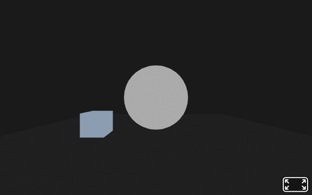
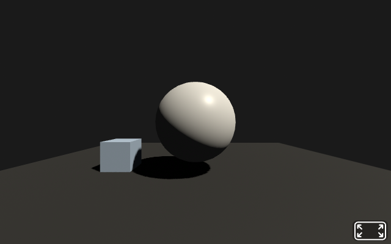
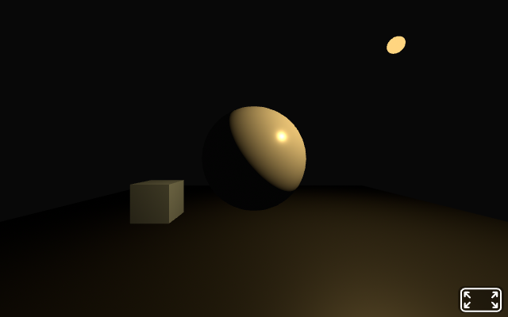
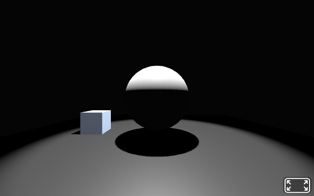
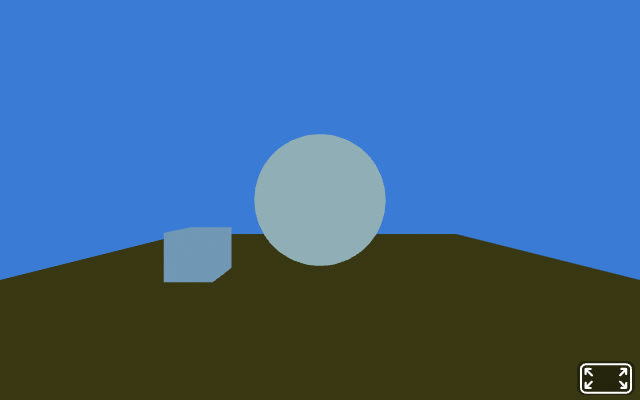
HTML <!-- 環境光: シーン全体をうっすら照らす --> <a-light type="ambient" color="#444"></a-light> <!-- 平行光源: 上方から太陽のように照らす --> <a-light type="directional" color="#FFF" intensity="0.6" position="-1 2 1"></a-light> <!-- 点光源: 電球のように光を放つ --> <a-light type="point" color="#FFE082" intensity="0.8" distance="10" position="0 3 -4"></a-light> <!-- スポットライト: 円錐状に照らす --> <a-light type="spot" color="#FFF" intensity="1" angle="45" penumbra="0.2" position="0 4 -3" target="#stage-obj"></a-light>
主な属性:
| 属性 | 説明 | デフォルト |
|---|---|---|
intensity | 光の強さ（0 = 消灯、1 = 標準） | 1.0 |
color | 光の色 | #FFF（白） |
distance | point/spot の光が届く距離（0 = 無限） | 0 |
angle | spot の照射角度（度） | 60 |
penumbra | spot の境界ぼかし（0-1） | 0 |
A-Frame で影を表示するには 3つの設定 がすべて必要です。
| # | 設定 | コード |
|---|---|---|
| 1 | シーンでシャドウを有効化 | <a-scene shadow="type: pcfsoft"> |
| 2 | ライトで影を投射（directional または spot のみ） | <a-light ... light="castShadow: true"> |
| 3 | オブジェクトで影を投射/受け取り | shadow="cast: true; receive: true" |
HTML <a-scene shadow="type: pcfsoft"> <!-- 影を落とすライト --> <a-light type="directional" position="-1 3 1" intensity="0.6" light="castShadow: true"></a-light> <!-- 影を投射するオブジェクト --> <a-box position="0 1 -3" color="red" shadow="cast: true"></a-box> <!-- 影を受け取る床 --> <a-plane position="0 0 -4" rotation="-90 0 0" width="10" height="10" color="#CCC" shadow="receive: true"></a-plane> </a-scene>
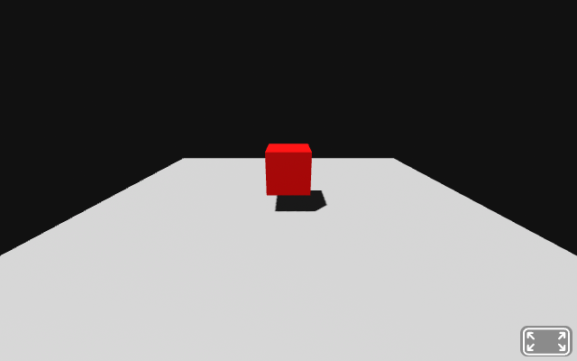
shadow="cast: true"のボックスから床（receive: true）に向けて影が落ちる。🖐 やってみよう（1分）
light="castShadow: true" を削除して影が消えることを確認し、再度追加してみよう。
影が表示されない場合のチェックリスト
<a-scene shadow="type: pcfsoft"> を書いたか？light="castShadow: true" を指定したか？directional か spot か？（ambient / point / hemisphere は影を作れない）shadow="cast: true" を書いたか？shadow="receive: true" を書いたか？A-Frame ではデフォルトでカメラが position="0 1.6 0"（人間の目の高さ）に自動配置されます。<a-camera> を自分で書くと、デフォルトカメラは無効になります。
| 要素/属性 | 説明 |
|---|---|
<a-camera> | カメラエンティティ。position で初期位置を指定する。 |
look-controls | マウスドラッグやタッチで視線の方向を変える（デフォルトON） |
wasd-controls | W/A/S/Dキーでカメラの位置を移動する（デフォルトON） |
fov | 視野角（Field of View）。大きいと広角、小さいと望遠。デフォルト: 80 |
HTML <!-- カメラを高い位置から見下ろすように配置 --> <a-camera position="0 5 8" rotation="-30 0 0"></a-camera> <!-- 移動を無効にして固定カメラにする --> <a-camera position="0 1.6 4" look-controls="enabled: false" wasd-controls="enabled: false"></a-camera>
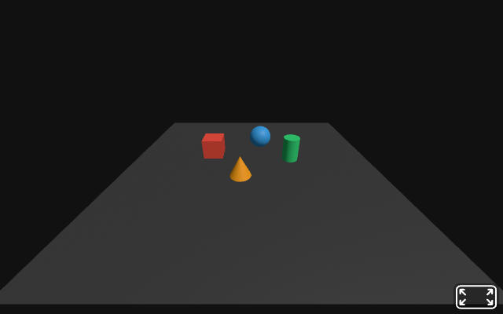
position="0 5 8" rotation="-30 0 0"：高い位置から見下ろす俯瞰カメラ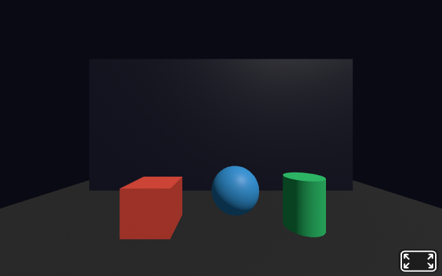
look-controls="enabled:false" wasd-controls="enabled:false"：移動不可の固定カメラ🖐 やってみよう（1分）
カメラの fov を "40"（望遠）と "120"（広角）に変えて、見え方の違いを確認してみよう。
<a-cursor> はカメラの中央から前方にレイキャスト（光線）を飛ばし、3Dオブジェクトとの交差判定を行う要素です。VR空間でのクリック操作に使います。
HTML <a-camera position="0 1.6 0"> <!-- カメラの子要素としてカーソルを配置 --> <a-cursor color="#FF5252" fuse="true" fuse-timeout="1500"></a-cursor> </a-camera>
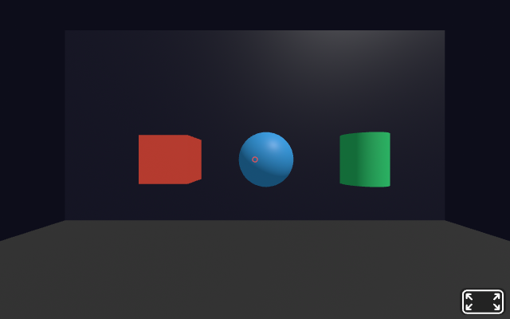
<a-cursor> が画面中央に固定表示される。オブジェクトを見つめると mouseenter イベントが発生する。| 属性 | 説明 |
|---|---|
fuse | true にすると、一定時間見つめるだけでクリック扱いになる（VR向け） |
fuse-timeout | fuse でクリックが発生するまでの時間（ミリ秒） |
color | カーソルの表示色 |
カーソルのイベント: カーソルがオブジェクトと交差すると mouseenter、離れると mouseleave、クリックすると click イベントが発生します。第7回のアニメーションと組み合わせて使います。
A-Frame では複数の <a-camera> を配置し、active 属性で切り替えることができます。
HTML <!-- 通常の一人称視点 --> <a-camera id="cam-fps" position="0 1.6 0" active="true"></a-camera> <!-- 上からの俯瞰カメラ --> <a-camera id="cam-top" position="0 10 0" rotation="-90 0 0" active="false" look-controls="enabled: false" wasd-controls="enabled: false"></a-camera>
JavaScript で setAttribute('active', true/false) を切り替えてカメラを変更します。詳細は後の回で扱います。
📖 キーワード
| intensity（強度） | 光の明るさを表す数値。0 で消灯、1 が標準。2 以上で過剰に明るくなる。 |
| castShadow | ライトが影を投射するかどうかのフラグ。<a-light ... light="castShadow: true"> のように light コンポーネント内で指定する（directional と spot のみ対応）。 |
| レイキャスト | カメラから仮想の光線（レイ）を飛ばし、3Dオブジェクトとの交差を判定する仕組み。カーソルのクリック検出に使われる。 |
| fov（視野角） | Field of View。カメラが映す範囲の角度。値が大きいと広角（魚眼風）、小さいと望遠になる。 |
📋 例題のコードを試すときの基本テンプレート（A-Frame 1.7.0）
以下のコードはそのままコピーして .html ファイルに貼り付ければ動きます。各例題の <a-scene>〜</a-scene> 部分だけを差し替えて使ってください。
HTML ── 基本テンプレート<!DOCTYPE html> <html lang="ja"> <head> <meta charset="UTF-8"> <title>A-Frame サンプル</title> <!-- A-Frame 1.7.0 ライブラリ（CDN から読み込む） --> <script src="https://aframe.io/releases/1.7.0/aframe.min.js"></script> </head> <body> <!-- ↓ ここを例題のコードに差し替える --> <a-scene> <!-- ライト・オブジェクト等をここに書く --> </a-scene> </body> </html>
ライト・カメラの基本概念を 5つの例題 で順番に確認します。各例題には段階的に切り替わるアニメーション図と1分でできる「やってみよう」があり、最後に解答例が用意されています。
背景: ライトを1つも書かないとデフォルト光が付き、自分で <a-light> を1つ追加するとデフォルトは無効化されます。ここでは ambient（環境光）だけを追加し、シーン全体がどう変わるかを確認します。
HTML <!-- パターンA: ライト指定なし（デフォルト ambient+directional が自動追加される） --> <a-scene> <a-sphere position="0 1.5 -4" radius="1" color="white"></a-sphere> <a-sky color="#222"></a-sky> </a-scene> <!-- パターンB: AmbientLight だけを明示追加（デフォルトの平行光は消える） --> <a-scene> <!-- 環境光: 全方向から均一にあたる下地の光 --> <a-light type="ambient" color="#FFFFFF" intensity="0.5"></a-light> <a-sphere position="0 1.5 -4" radius="1" color="white"></a-sphere> <a-sky color="#222"></a-sky> </a-scene>
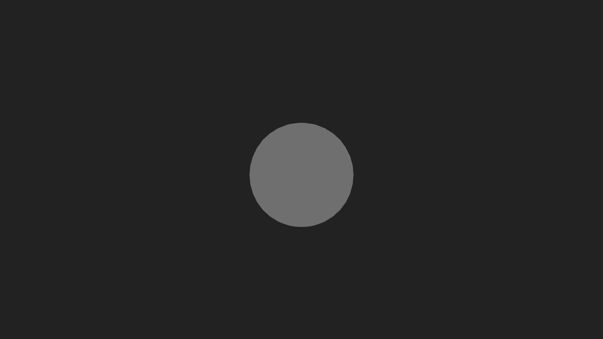
やってみよう（1分）
パターンBの intensity を "0.2" → "0.8" → "1.5" と段階的に変えて、球の明るさがどう変化するか確認しよう。
→ 大きすぎる値（例: 3.0）にすると、白飛びして立体感が完全に失われることも観察してみよう。
読み方: ambient = アンビエント / intensity = インテンシティ（強度） / light = ライト（光）
具体例: 曇天の屋外を想像してみよう。太陽の位置が分からないため、影もなく、立体感も弱い。それが ambient だけの状態です。一方、晴天は太陽の方向がはっきりしているため、影と明暗で立体感が生まれます（= directional の役割）。
結論: ambient は全方向から均一にあたるため、面ごとの明暗差が出ない。立体感を出すには directional や point を組み合わせる必要があります。
背景: directional は position 属性で光の到来方向を表します（座標 → 原点方向に平行光が届く）。同じシーンでも、光が左上から来るか右下から来るかで影と立体感が大きく変わります。
HTML <a-scene shadow="type: pcfsoft"> <!-- 環境光（下地）+ 平行光源（影付き） --> <a-light type="ambient" color="#444"></a-light> <!-- position を変えて方向を変化させる --> <!-- 左上から: position="-3 4 2" --> <!-- 真上から: position="0 5 0" --> <!-- 右下から: position="3 1 -2" --> <a-light type="directional" color="#FFF" intensity="0.9" position="-3 4 2" light="castShadow: true"></a-light> <a-box position="0 1 -4" color="#FF5252" shadow="cast: true"></a-box> <a-plane position="0 0 -4" rotation="-90 0 0" width="10" height="10" color="#CCC" shadow="receive: true"></a-plane> </a-scene>
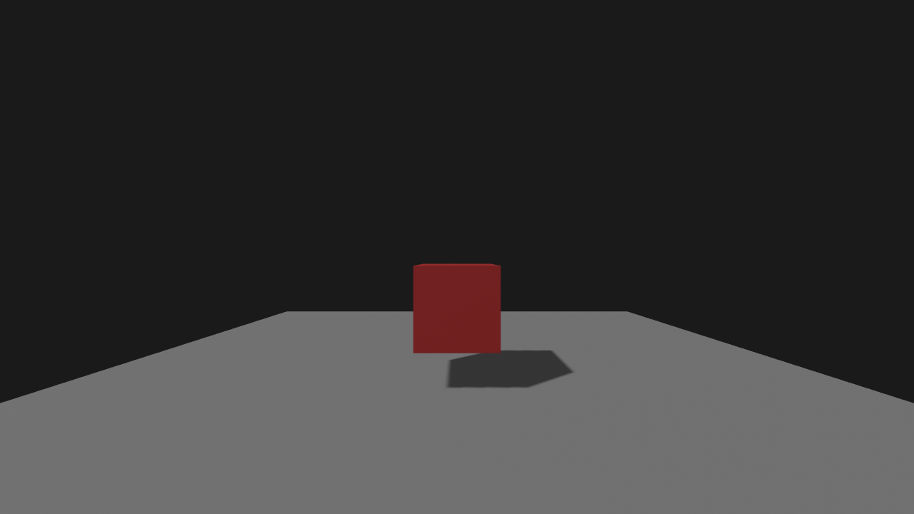
やってみよう（1分）
directional light の position を "-3 4 2" → "0 5 0" → "3 1 -2" の3パターンに変えて、箱と床の影の向きと長さがどう変わるか観察しよう。
→ 真上 (0,5,0) からの光だと影は箱の真下に小さくでき、低い位置からの光だと長い影ができることに注目。
読み方: directional = ディレクショナル（方向性のある） / position = ポジション（位置） / cast shadow = キャストシャドウ（影を投射する）
具体例: 太陽の位置を考えると分かりやすい。太陽が東 (3,1,-2) にあるとき、地面の物体の影は西側に長く伸びる。お昼に太陽が真上 (0,5,0) にあるとき、影は足元に短く出る。これと同じ仕組みです。
結論: directional の position は「光源がどこにあるか」を表します。光自体は (position → 原点) の方向に平行に進むため、position は光の到来方向を決める役割になります。
背景: point は全方向に光を放つ電球のような光源で、distance で減衰範囲を指定します。光源そのものは見えないので、同じ位置に小さな <a-sphere material="shader: flat"> を置いて「光球」として可視化するのが定番です。
HTML <a-scene> <a-light type="ambient" color="#222"></a-light> <!-- 点光源（暖色の電球）+ 同位置の光球（可視化用） --> <a-light id="bulb" type="point" color="#FFE082" intensity="1.2" distance="8" position="-2 2 -3"></a-light> <a-sphere id="bulb-vis" position="-2 2 -3" radius="0.15" color="#FFE082" material="shader: flat"></a-sphere> <!-- 照らされる対象（白い箱） --> <a-box position="0 1 -4" color="white"></a-box> <a-plane position="0 0 -4" rotation="-90 0 0" width="10" height="10" color="#444"></a-plane> </a-scene>
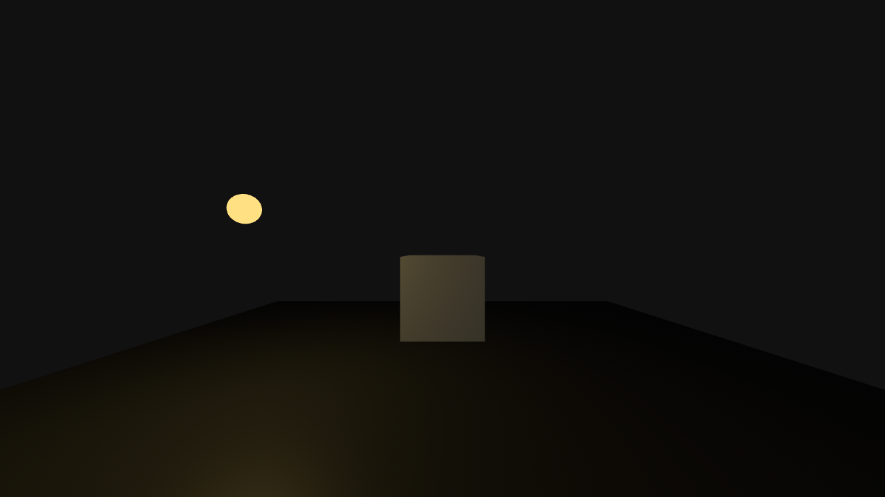
やってみよう（1分）
point light と光球（a-sphere）の両方の position を "-2 2 -3" → "0 3 -3" → "2 2 -3" と変えて、箱のどの面が明るくなるか確認しよう。
→ distance="8" を "2" に変更すると、距離2より遠いものは光が届かなくなることも試そう。
読み方: point light = ポイントライト（点光源） / distance = ディスタンス（距離） / shader: flat = シェーダーフラット（陰影なし）
具体例: 部屋の電球を想像してみよう。電球そのもの（光るガラス球）と、電球から出る光は別物。3Dシーンでも、<a-light> は光だけを発するため見えない。material="shader: flat" の a-sphere を同じ位置に置くと、光に影響されず常に黄色に光るガラス球として表現できます。
結論: 光源の位置を視覚的に示すには、同じ position に flat shader の小さな球を置く。これがゲームの「ランタン」「松明」表現の基本パターン。
背景: A-Frame のデフォルトは PerspectiveCamera（遠近法カメラ）で、遠くのものは小さく見えます。一方 OrthographicCamera（正射影カメラ）は距離に関係なく同じ大きさに見え、設計図や2Dゲーム風の表現に使えます。
HTML <!-- PerspectiveCamera: デフォルト。fov（視野角）で広さを調整 --> <a-camera position="0 1.6 3" fov="80"></a-camera> <!-- OrthographicCamera: camera コンポーネントで type を明示指定 --> <!-- left/right/top/bottom で表示範囲を指定（カメラから見た範囲） --> <a-entity camera="active: true" position="0 1.6 3" camera-ortho="left: -4; right: 4; top: 3; bottom: -3; near: 0.1; far: 100"></a-entity> <!-- 比較用シーン: 同じ大きさの球が手前と奥に並ぶ --> <a-sphere position="0 1.5 -2" radius="0.5" color="#FF5252"></a-sphere> <a-sphere position="0 1.5 -5" radius="0.5" color="#4FC3F7"></a-sphere> <a-sphere position="0 1.5 -8" radius="0.5" color="#76B900"></a-sphere>
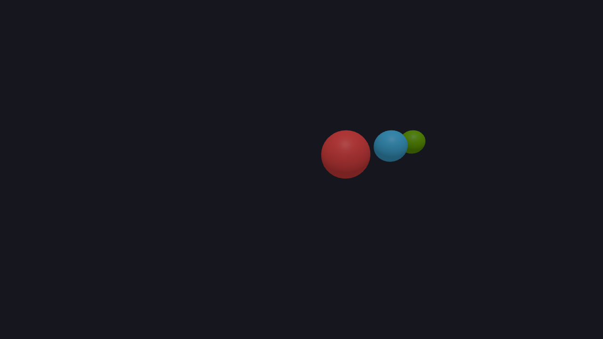
やってみよう（1分）
PerspectiveCamera の fov を "40"（望遠）と "120"（広角）に変えて、3つの球の大きさの差がどう変化するか観察しよう。
→ fov="40" では奥行きの差が圧縮されて見え、Orthographic に近づくことに注目。
読み方: perspective = パースペクティブ（遠近法） / orthographic = オーソグラフィック（正射影） / frustum = フラスタム（視錐台） / fov = エフオーブイ（視野角）
具体例: 建築の設計図、ドット絵の2Dゲーム（「ファイナルファンタジータクティクス」など）、CADの正面/側面ビュー、ミニチュア風映像などに使われます。「奥行きで物の大きさを変えたくない」ときに選びます。
結論: 一般的なVR体験では Perspective が標準。Orthographic はマップビューやUIオーバーレイなど特殊用途に使う。fov を小さくすると Perspective でも「望遠レンズ」のように奥行きが圧縮されます。
背景: カメラの「どこから見るか」は position、「どこを見るか」は rotation または look-at コンポーネントで指定します。rotation は角度（°）で、look-at="#target" は常にそのオブジェクトを向き続けるのが便利です。
HTML <a-scene> <!-- 注視対象: 中央の箱 --> <a-box id="target" position="0 1 -4" color="#FF5252"></a-box> <!-- パターンA: 真正面から (rotation で固定) --> <a-camera position="0 1.6 0" rotation="0 0 0"></a-camera> <!-- パターンB: 上から見下ろし (rotation X=-45度) --> <a-camera position="0 5 -1" rotation="-45 0 0"></a-camera> <!-- パターンC: look-at で対象を常に追跡 --> <a-camera position="3 2 -1" look-at="#target"></a-camera> </a-scene>
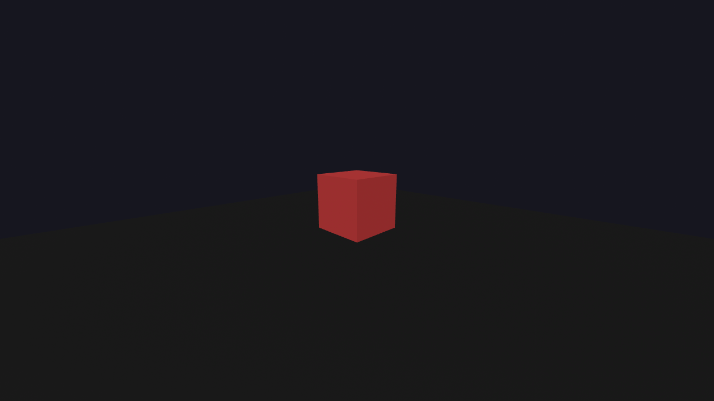
やってみよう（1分）
パターンC（look-at）のカメラの position を "3 2 -1" → "5 1 -1" → "-3 3 -2" と変えてみよう。カメラの視線が自動で対象を追ってくれることを確認しよう。
→ look-at がない場合（rotationなしのカメラ）と比較して、何が違うかを観察しよう。
読み方: position = ポジション（位置） / rotation = ローテーション（回転） / look-at = ルックアット（注視）
具体例: 監視カメラを想像してみよう。固定された監視カメラ（rotation 指定）は常に同じ方向を向く。一方、警備員が容疑者を目で追う動き（look-at 指定）は、対象が動いてもずっと顔を向け続ける。後者は対象が動くシーンで便利です。
結論: 静的なシーン視点には rotation、動くオブジェクトを追跡したいときは look-at="#id"。VR で「キャラクターを常に見る」演出や、「プロモーション動画のターゲット撮影」に向いています。
問題: 以下のコードを読み、各ライトの効果を予測して表を埋めなさい。
HTML <a-scene shadow="type: pcfsoft"> <a-light type="ambient" color="#333"></a-light> <a-light type="directional" color="#FFA500" intensity="0.7" position="2 4 1" light="castShadow: true"></a-light> <a-light type="point" color="#4FC3F7" intensity="0.5" distance="8" position="-2 2 -3"></a-light> <a-box position="0 1 -4" color="white" shadow="cast: true"></a-box> <a-plane position="0 0 -4" rotation="-90 0 0" width="10" height="10" color="#EEE" shadow="receive: true"></a-plane> <a-sky color="#111"></a-sky> </a-scene>
| ライト | 種類 | 色 | 予想される効果 | 影を作るか？ |
|---|---|---|---|---|
| 1つ目 | ||||
| 2つ目 | ||||
| 3つ目 |
追加の問い: 箱の影は床に表示されますか？ その理由を書いてください。
VS Code で Web06/public フォルダの中に lightup.html を新規作成し（エクスプローラで public を選択 → 「新しいファイル」アイコン → ファイル名入力）、「光で魅せる」シーンを自由に作ってください。
明るい昼間の風景ではなく ―― 暗がりの中で光が主役になる空間を目指しましょう（例: 夜のミュージアム展示、幻想的なオブジェ、ステージ照明、イルミネーション、神秘的な祭壇 など）。
この回はこの1課題に集中します。例題・トレース演習・コード体験で学んだ ambient／directional／point・影・カメラを、自分の作品の中ですべて使いましょう。
確認方法: コード体験で起動した server.js が動いていれば、ブラウザで http://localhost:3000/lightup.html を開くだけ（保存後に再読み込み）。サーバが止まっていたら、ターミナルで node server.js を実行してから開く。
必須要件
<a-scene shadow="type: pcfsoft"> でシャドウを有効化するmaterial="shader: flat" の小さな <a-sphere>）で可視化するlight="castShadow: true"、影を落とすオブジェクトに shadow="cast: true"、床に shadow="receive: true" を設定する<a-sky>）にして光を引き立てるposition と look-at（または rotation）で「見せたいアングル」を決めるcolor や intensity で雰囲気を作る（複数色のライトを推奨）提出要件
| 提出物 | 内容 |
|---|---|
| コード | lightup.html のコード全体をNotionノートに貼り付ける |
作品づくりに集中してください。完成した lightup.html のコードのみで提出完了です。
これをそのまま貼り付ければ、必須要件をすべて満たした「光が主役の最小シーン」ができます。ここから色・位置・オブジェクトを足して自分の作品にしてください。
<!-- ① シーンでシャドウを有効化 --> <a-scene shadow="type: pcfsoft"> <!-- ② 環境光: 暗めの下地（光球を引き立てるため弱く） --> <a-light type="ambient" color="#222244" intensity="0.3"></a-light> <!-- ③ 平行光源: 上方からのスポット風。影を投射する --> <a-light type="directional" color="#FFE0B2" intensity="0.7" position="2 5 1" light="castShadow: true"></a-light> <!-- ④ 点光源: 台座の手前を青く照らす電球 --> <a-light type="point" color="#4FC3F7" intensity="1.0" distance="8" position="-1.5 1.2 -2.5"></a-light> <!-- ⑤ 光球: 点光源の位置を可視化（自分で光って見える） --> <a-sphere position="-1.5 1.2 -2.5" radius="0.12" color="#4FC3F7" material="shader: flat"></a-sphere> <!-- 主役のオブジェクト: 影を落とす --> <a-box position="0 1 -3" color="#FFFFFF" shadow="cast: true"></a-box> <!-- 床: 影を受け取る --> <a-plane position="0 0 -3" rotation="-90 0 0" width="12" height="12" color="#333" shadow="receive: true"></a-plane> <!-- 暗い空で光を引き立てる --> <a-sky color="#0a0a14"></a-sky> <!-- カメラ: 見せたいアングルを固定（やや斜め） --> <a-entity camera position="2 1.8 1" rotation="-10 30 0"></a-entity> </a-scene>
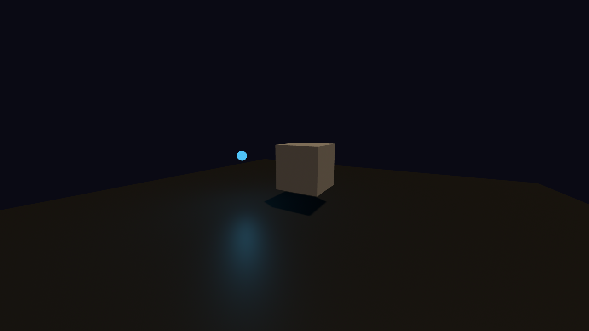
作品（展示物）の周りに違う色の点光源を2つ置くと、いっきにドラマチックになります。光球も色を合わせると「光っている演出」がはっきりします。
<!-- 展示台（円柱の台座） --> <a-cylinder position="0 0.4 -3" radius="0.8" height="0.8" color="#444" shadow="receive: true"></a-cylinder> <!-- 台の上の主役（影を落とす） --> <a-dodecahedron position="0 1.3 -3" radius="0.5" color="#FFFFFF" shadow="cast: true"></a-dodecahedron> <!-- 左から暖色の点光源＋光球 --> <a-light type="point" color="#FF7043" intensity="0.9" distance="6" position="-2 1.5 -2"></a-light> <a-sphere position="-2 1.5 -2" radius="0.1" color="#FF7043" material="shader: flat"></a-sphere> <!-- 右から寒色の点光源＋光球 --> <a-light type="point" color="#42A5F5" intensity="0.9" distance="6" position="2 1.5 -2"></a-light> <a-sphere position="2 1.5 -2" radius="0.1" color="#42A5F5" material="shader: flat"></a-sphere>
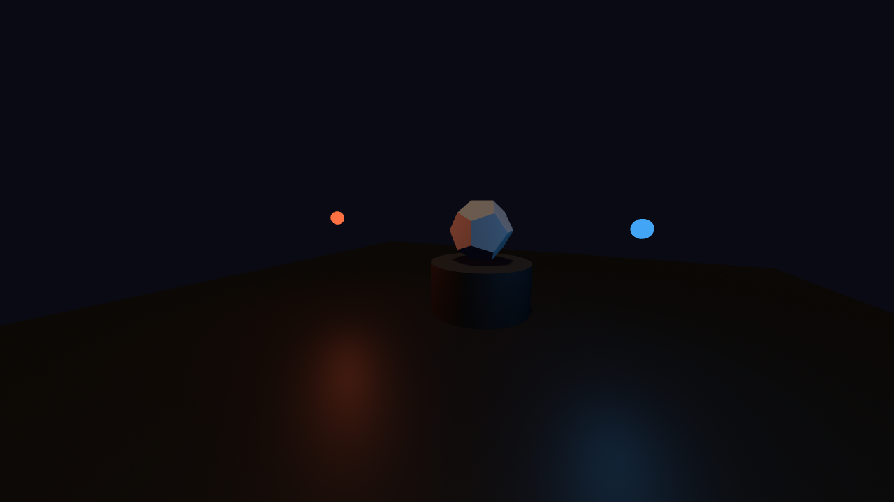
左右から色違いの光を当てると、白い主役の左面が暖色・右面が寒色に染まり、暗い背景の中で立体感が際立ちます。intensity や distance を変えて、光の強さ・届く範囲を調整しましょう。
各セクションを埋めていってください。これが提出するPDFの元になります。
Notion テンプレート
# Webプログラミング演習 第6回
名前:
学籍番号:
---
## 説明: やってみよう（1.1 ライトの種類）
### spotライトを追加して angle / penumbra を変更した結果
- 追加したコード:
```html
（ここにコードを貼り付け）
```
- 光の当たり方の変化（1文）:
---
## 説明: やってみよう（1.2 影）
### light="castShadow: true" を削除/追加したときの挙動
（影が消えた/戻った挙動を1文で書く）
---
## 説明: やってみよう（1.3 カメラ fov）
### fov を 40（望遠）と 120（広角）に変えたときの見え方
（視界の変化を1文で書く）
---
## トレース演習 1: ライトの効果を予測する
| ライト | 種類 | 色 | 予想される効果 | 影を作るか？ |
|---|---|---|---|---|
| 1つ目 | | | | |
| 2つ目 | | | | |
| 3つ目 | | | | |
### 追加の問い: 箱の影は床に表示されるか？ その理由
---
## コード体験 1: ライトの比較（light-compare.html）
### Q1. 3つのオブジェクト（球・箱・円柱）の明暗の違い
- 左側と右側で明るさは違うか:
### Q2. 「試してみよう」から1つ以上試した結果
（試した内容と結果を書く）
---
## 標準課題: ライトアップ作品を作る（クリエイティブ課題）
### コード（lightup.html 全体）
```html
（ここに貼り付け）
```
| ライト | 種類 | 色 | 予想される効果 | 影を作るか？ |
|---|---|---|---|---|
| 1つ目 | ambient（環境光） | #333（暗い灰色） | シーン全体をうっすら照らす。立体感は出ない。最低限の明るさを提供する下地。 | いいえ |
| 2つ目 | directional（平行光源） | #FFA500（オレンジ） | 右上（position="2 4 1"）からオレンジ色の平行光が当たる。オブジェクトの右上が明るく、左下が暗くなる。強度0.7。 | はい（light="castShadow: true"） |
| 3つ目 | point（点光源） | #4FC3F7（水色） | 左側（position="-2 2 -3"）から水色の光が放射される。距離8まで届く。オブジェクトの左側が青みがかる。 | いいえ（point light はA-Frameで影を投射しない設定） |
追加の問い: はい、箱の影は床に表示されます。理由: (1) <a-scene shadow="type: pcfsoft"> でシャドウが有効、(2) directional light に light="castShadow: true" が設定されている、(3) 箱に shadow="cast: true"、床に shadow="receive: true" が設定されている。3つの条件がすべて揃っているためです。
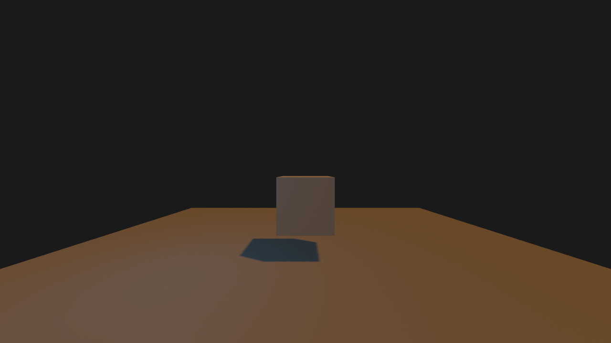
AmbientLight の intensity を "0.2" / "0.8" / "1.5" に段階的に変えたときの見え方:
intensity="0.2" → 球はほぼ真っ暗。輪郭がうっすら見える程度。 intensity="0.8" → 球全体が均一に灰白色。立体感はないが視認可能。 intensity="1.5" → 球全体が真っ白に近い（白飛び）。立体感は完全に失われる。
intensity は光の強さを表す係数で、0 = 消灯、1.0 = 標準、2.0以上 = 過剰。ambient だけだと値を上げても「のっぺり明るくなる」だけで立体感は出ません。立体感は directional や point による面ごとの明暗差から生まれます。実用上は ambient 0.3〜0.5 + directional 0.6〜0.8 の組み合わせが定番です。
DirectionalLight の position を3パターンに変えたときの影の挙動:
| position | 光の向き | 影の向き | 影の長さ |
|---|---|---|---|
"-3 4 2" | 左上から斜めに到達 | 右下方向に伸びる | 中程度（標準的な太陽の角度） |
"0 5 0" | 真上から垂直に到達 | 箱の真下に小さく出る | 非常に短い（南中時の太陽） |
"3 1 -2" | 右側から水平に近い角度 | 左方向に長く伸びる | 非常に長い（夕日の角度） |
directional の position は「光源の位置」を表します。光は (position → 原点) の方向に平行に進むため、影は光と反対側に伸びます。低い position（y が小さい）ほど水平に近い光になり、長い影ができます。映画やゲームでドラマチックな雰囲気を出すには、低角度の光が使われる理由はここにあります。
PointLight の光球を3つの位置に動かしたとき、白い箱（中央 (0,1,-4)）の最も明るくなる面:
光球 (-2, 2, -3) → 箱の左側面が最も明るい 光球 ( 0, 3, -3) → 箱の上面が最も明るい 光球 ( 2, 2, -3) → 箱の右側面が最も明るい
point は全方向に光を放つ電球なので、光源と面の位置関係で明るさが決まります。光源に向いている面ほど明るく、裏側の面は暗くなります。さらに distance="8" を "2" にすると、距離2より遠いオブジェクトには光が届かなくなり真っ暗になる（厳密には ambient のぶんだけ見える）ことが確認できます。distance="0" は「無限遠まで届く」の意味で、減衰しません。
PerspectiveCamera の fov を変えたときの、3つの同じ大きさの球の見え方:
| fov | 呼び方 | 奥行きの見え方 |
|---|---|---|
"40" | 望遠（テレフォト） | 奥の球と手前の球の大きさの差が小さい。Orthographicに近い圧縮感。 |
"80"（デフォルト） | 標準 | 人間の視野に近い自然な遠近感。 |
"120" | 広角（魚眼風） | 奥の球が非常に小さく、手前の球が大きく強調される。歪みも出る。 |
fov（Field of View = 視野角）はカメラが映す範囲の角度です。値を小さくすると視野が狭まり、結果的に「遠くを近くに圧縮して見せる」効果が生まれます（=望遠レンズ）。逆に大きくすると視野が広がりますが、画面の端ほど歪み、近くのものが過剰に大きく見えます（=広角レンズ）。VRでは80〜90が標準で、これ以上大きいと酔いやすくなります。
look-at="#target" をつけたカメラの position を変えると:
position="3 2 -1" → 右側から見下ろす。視線は中央の赤い箱を向く。 position="5 1 -1" → さらに右に離れて水平視点。視線は箱を向く。 position="-3 3 -2" → 左上から見下ろす。視線は箱を向く。
カメラがどこに動いても、視線は常に #target（赤い箱）を向き続けるのが look-at の特徴です。rotation で固定指定した場合は、カメラの位置だけ動いて視線方向は変わらないため、対象を見失う可能性があります。
使い分けの基準:
rotation: 視点と視線が両方とも静的なシーン（建築のショーケース、固定の風景など）look-at="#id": 対象が動く、またはカメラだけが移動するシーン（追跡カメラ、プロモーション映像、キャラクター注視など）
※ 標準課題（ライトアップ作品）はクリエイティブ課題のため、固定解答はありません。
ヒントは「標準課題」セクション内の「ライトアップの基本セット／展示台にスポットを当てる」を参照してください。